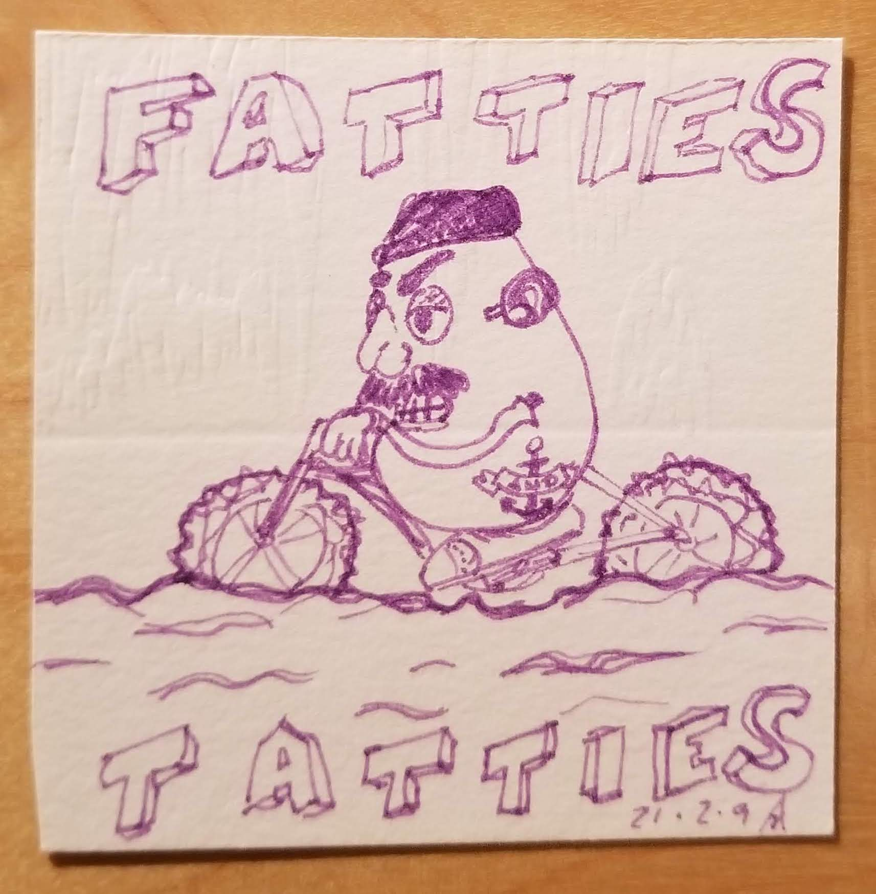

Home base will be out back of 1205 Jenifer in Madison WI
| Time | Thing |
|---|---|
| 1PM | Hangs, messing around on bikes |
| < 2PM | Food orders will be taken |
| 2PM | 🟢 Race course opens! 🟢 |
| < 3PM | 🏁 Race course closes. 🏁 |
| 3PM | Awards given, hangs, food orders'll be around |
| 5PM | 🎬 GTFO 🎬 |
Well, if you like people, or just potatoes, feel free to come by for some banter!
...if you don't like any of those things, you might just be a bad person?
As of this year, we're not going to be providing any group bikes. We're sure there'll be some folks around, who'll let you try their bike out, but you should prolly plan on finding yourself a bike if you want one.
Because it took a lot of time, energy, and effort (and we drive a small car)...annnnnnnnd Machinery Row Cycles is renting fat bikes this year, so chill mon frère 😎
In 2021, we were all going nuts from the Pandemic, and decided, that in the middle of the winter, in Wisconsin, we were going to throw a party that was entirely socially distanced, and entirely outside. We made sauces, we ordered 5 Guys, and we got a number of local bike shops to rent or loan us fat bikes so that our ridiculous group of friends could keep the theme alive.
That's literally it.